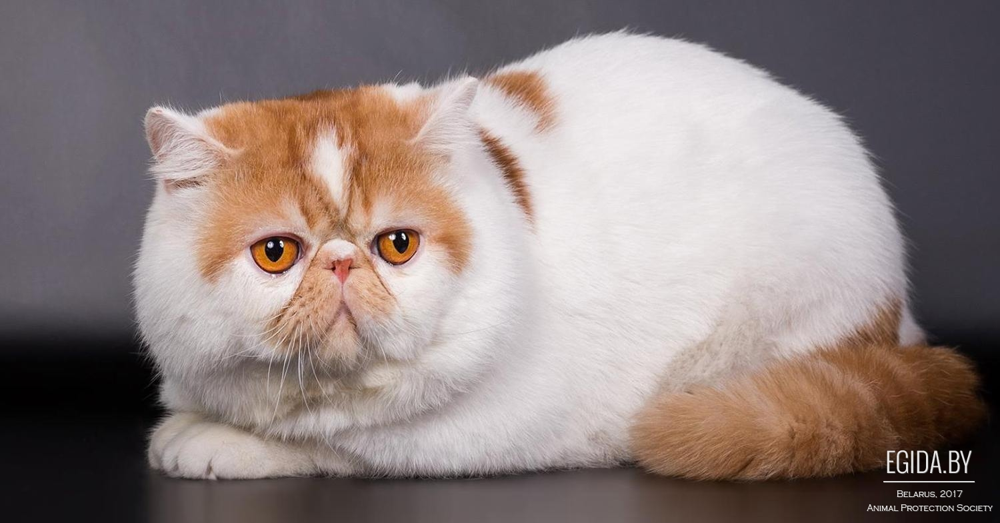

Кошка — домашнее животное, одно из наиболее популярных (наряду с собаками) «животных-компаньонов» или домашних животных. Кошки — млекопитающие и плотоядные животные. За способность уничтожать грызунов люди ценят кошек около 10 000 тысяч лет. Являясь одиночным охотником на грызунов и других мелких животных, кошка — социальное животное, использующее для общения широкий диапазон звуковых сигналов, а также феромоны и движения тела. В настоящее время в мире насчитывается около 600 млн домашних кошек, выведено около 256 пород, от длинношерстных (персидская кошка) до лишённых шерсти (сфинксы), признанных и зарегистрированных различными фелинологическими организациями. Самая первая порода кошек появилась в Египте. Кошки распространены по всему миру.
Средняя длина тела кошки без хвоста составляет 60 см, длина хвоста 25 — 41 см. Как правило, самки меньше самцов, как и у прочих млекопитающих. Самая крупная кошка, согласно «Книге рекордов Гиннесса», достигает в длину 123 см. Вес средней здоровой кошки составляет 2, 5 — 6, 5 кг, но встречаются более крупные экземпляры, вес которых достигает 7 — 9 кг. Коты пород Сибирская кошка и мейн-кун могут достигать 11, 5 — 13 кг. Кошки могут достигать 20 кг, а самый тяжёлый кот весил 21, 3 кг. Обычно сравнительно большой вес кошки является следствием ожирения.
Сиби́рская кошка — порода полудлинношёрстных кошек. Сибирская кошка имеет полудлинную густую шерсть, не пропускающую влагу, уши среднего размера, пушистый хвост. Окрас различный. По неофициальной версии от сибирской кошки произошла невская маскарадная кошка.
Норве́жская лесна́я ко́шка — порода полудлинношёрстных кошек, наиболее распространена в странах Северной Европы. В Норвегии порода известна как Skogkatt или Skovkatt (от «skog» и «skov», означающих «лес» на различных норвежских диалектах) и Norsk Skogkatt (Норвежская лесная кошка) и объявлена официальной породой Норвегии. В 1977 г. порода была признана FIFe (Fédération Internationale Féline), а кот по кличке Панс Трулс стал первым зарегистрированным представителем породы. В настоящее время норвежская лесная признана почти всеми международными фелинологическими организациями. Сокращённое название «Wegie» (ви́джи) принято фелинологами и бридерами (заводчиками) кошек США, как производное от слова «Norwegian». Животное от средних до крупных размеров. Похожа также на сибирскую кошку, турецкого вана и мэйн-куна.
Русская голубая кошка — порода домашней кошки, признанная международными фелинологическими организациями, которая стала известна в России только с началом фелинологического движения. Русская голубая кошка c успехом разводится за рубежом. Она является одной из самых популярных пород короткошерстных кошек[источник не указан 1239 дней]. Продажа котят наиболее распространена в Швеции, Финляндии, Норвегии, Чехии, Словакии, Венгрии.
Абисси́нская кошка — порода домашних кошек, выведенная в Великобритании в конце XIX века на основе аборигенных пород кошек Восточной Африки и Юго-Восточной Азии. Абиссинская — одна из самых древних пород кошек и одновременно одна из первых пород, получивших официальный выставочный стандарт.
Еги́петский ма́у[1] — короткошёрстная, среднего размера порода кошек с пятнистым окрасом. Их пятна находятся не только на шёрстке, но и на коже. Слово «мау» (егип. Mjw) в переводе с египетского означает «кот»[2].
Тайская кошкаИстория породы началась в 60-х годах прошлого века, в доме любительницы кошек Джейн Милл в США. Принадлежащая ей самка бенгальской кошки по имени Малайзия повязалась с чёрным домашним котом и произвела на свет пятнистого котёнка. Первый пра-бенгал, как и её потомство, погибли и работа над породой возобновилась только в 1980 году. Выведение породных кошек путем скрещивания с дикими — весьма трудоемкий процесс, для которого необходимо иметь несколько диких кошек. Не каждый представитель бенгальских кошек будет вязаться с более мелкими домашними кошками. Кроме того, все мужское потомство от таких вязок — бесплодное, поэтому в работу над породой идут только самки. Джейн Милл разбиралась в генетике и практике разведения диких и домашних кошек и ей удалось получить потомство, устойчиво передающее породные признаки. Представителем породы считается бенгал, отстоящий от дикого предка более чем на 4 поколения. Порода была представлена на выставке в 1987 году. В 1991 году породу официально зарегистрировали и допустили к выставкам и породному разведению. Одно из названий дикой бенгальской кошки — «леопардовая кошка» поэтому может возникнуть предположение о её близком родстве с леопардом. На самом деле она не ближе к леопарду, чем обычная домашняя кошка, хоть и относится к другому роду — роду восточные кошки.

Уютные ассоциации с Великобританией — чай, бисквиты и британская короткошерстная кошка. Эта порода зарегистрирована в 1898 году, но появилась она еще во времена Древнего Рима. Фелинологи считают, что предки котов-британцев попали в Римскую империю из Египта. В Британии эти кошки оказались после римского завоевания. В начале XX века порода едва не исчезла: длинношерстные породы затмили британцев популярностью, а во время двух мировых войн разведение прекратилось. Чтобы спасти породу, любители скрещивали британцев с персами. Возможно, благодаря персам у британских короткошерстных приплюснутая мордочка, круглые.
Экзоты характеризуются, прежде всего, большой схожестью с кошками персидской породы. Портрет экзота — коренастая крепкая и в то же время компактная кошка с большой круглой головой, огромными круглыми выразительными глазами, выраженными щечками, впередсмотрящими небольшими ушами и коротким курносым носом с ярко выраженным стопом. Экзотов иногда называют «персидской кошкой для ленивых» из-за того, что с одной стороны они очень похожи на персов, но при этом не требуют такого пристального внимания к уходу за своей шерстью. Шерсть — это основное отличие экзота от перса. Шерсть у экзота короткая, около двух сантиметров длиной, невероятно густая и плюшевая на ощупь. На сегодняшний день экзотическая короткошерстная кошка, благодаря своему удивительному характеру и милому, детскому выражению лица, входит в десятку самых популярных пород мира.
Сфинкс – бесшерстная кошка с поведением и характером собаки. Представители породы относятся к классу компаньонов. Поэтому нуждаются во внимании и совсем непохожи на независимых кошек, стремящихся держаться от человека на расстоянии. Животное ориентировано на взаимодействие, любит сидеть на коленях, легко уживается с другими животными в доме и хорошо ладит с детьми, даже самыми маленькими. Порода сфинкс имеет несколько ответвлений. Например, канадский сфинкс, донской сфинкс и петерболд. Однако признание от международных фелинологических организаций заслужил пока лишь канадский. О нем и поговорим подробнее.
Вы конечно же помните известный анимационный сериал о странном существе под названием котопёс? Так вот это имя вполне подойдёт им, кошкам девон-рексам, и не потому только, что эти чрезвычайно милые и очаровательные животные самим обликом, поведением своим и утончёнными манерами больше походят на иных собак.
Первые упоминания об ориенталах встречаются еще в древних рукописях Сиама (современного Тайланда), в которых описывались полностью окрашенные животные, без характерных отметин на мордочке, лапах и хвосте. «Восточная кошка» – именно так переводится название породы –долгое время не покидала пределы своей исторической родины. Дело в том, что ориенталы, как и ближайшие собратья сиамцы, считались священными животными и жили в буддийских храмах. Король Сиама лично подписал указ, запрещающий вывоз кошек за границу. И лишь в конце 19 века прародители ориенталов появились в Англии, потом в США, а позже распространились по всему миру.